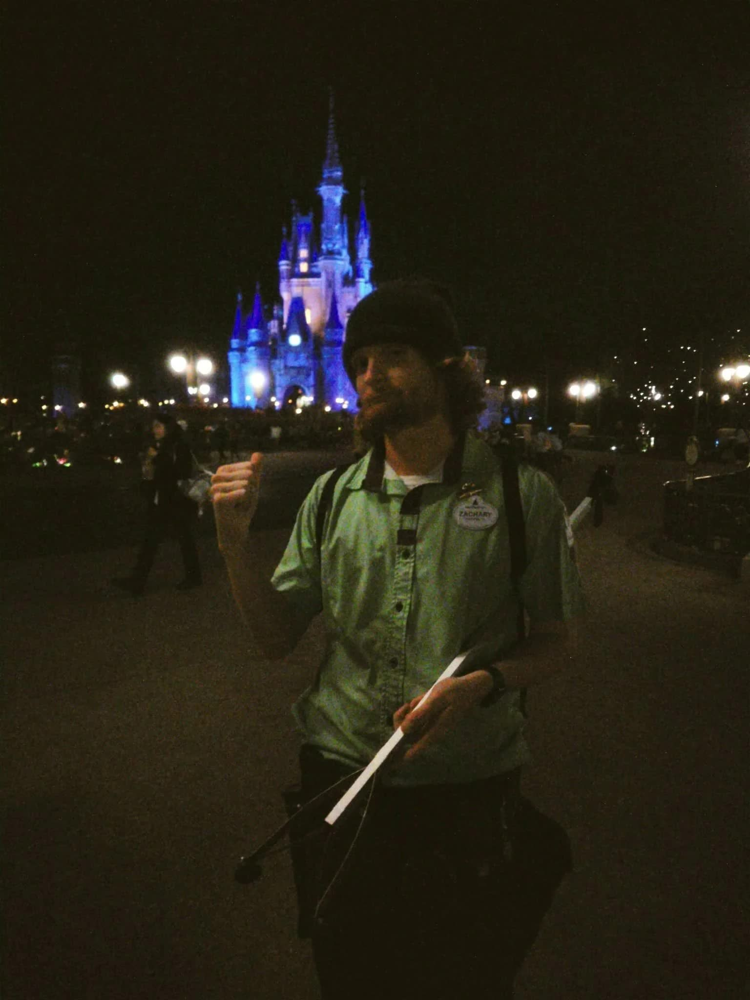
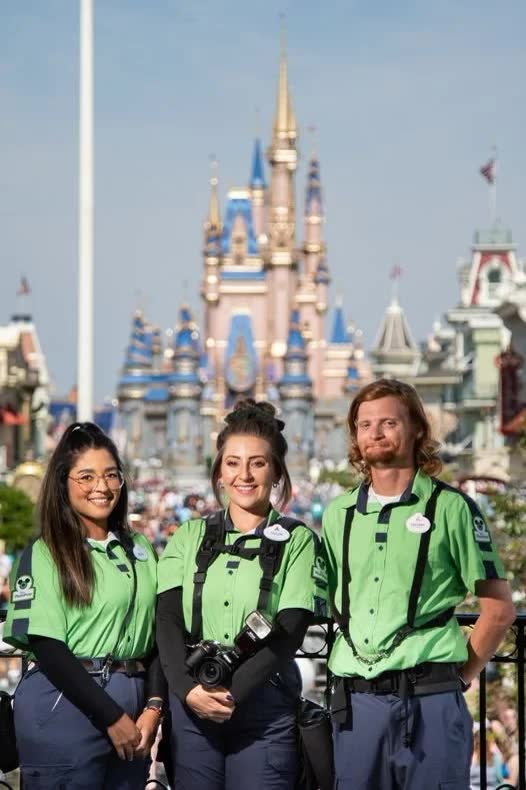
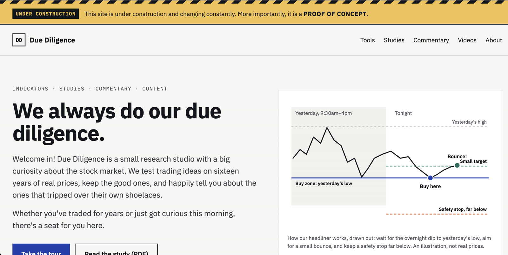

Direct & edit
Short films, music videos, and campaign pieces. Connection, Vivid Nightmare, Cameron Koffman for Assembly.
BFA in Film & TV Production. Full-time PhotoPass photographer at Walt Disney World since 2022, after the Disney College Program. Freelance production under Lindelof Limited: directing, editing, cinematography, and stills that are not Disney jobs.

Short films, music videos, and campaign pieces. Connection, Vivid Nightmare, Cameron Koffman for Assembly.
A selected stills gallery, plus years of guest photography at Disney. Hire him for non-Disney photo and video.
Bearkat Sports Network, 2017–2021. Technical director on a Tricaster and a Ross board for ESPN3 and ESPN+.

02 Creative works Connection, The Battleground, Vivid Nightmare, The Underreported. A 2018 Telly. 03
Screenwriting
Save the Day (2018) and Death and Taxes (2026), plus three projects in progress.
03
Screenwriting
Save the Day (2018) and Death and Taxes (2026), plus three projects in progress.
 04
Broadcast portfolio
Sam Houston volleyball, soccer, and an ESPN feed. Crew named, games findable.
04
Broadcast portfolio
Sam Houston volleyball, soccer, and an ESPN feed. Crew named, games findable.
 05
Due Diligence
A research studio in progress. The definition, then the site itself.
05
Due Diligence
A research studio in progress. The definition, then the site itself.

06 Photography Stills from Walt Disney World, the road, and the cats. Not the PhotoPass catalog. 07
2026 résumé & reels
Directing, editing, screenwriting, and broadcast. Résumé current as of 1.10.2026.
07
2026 résumé & reels
Directing, editing, screenwriting, and broadcast. Résumé current as of 1.10.2026.
 08
Lunchalof Games
Twitch: charity streams, including Texas Children’s Hospital, and highlight edits.
08
Lunchalof Games
Twitch: charity streams, including Texas Children’s Hospital, and highlight edits.